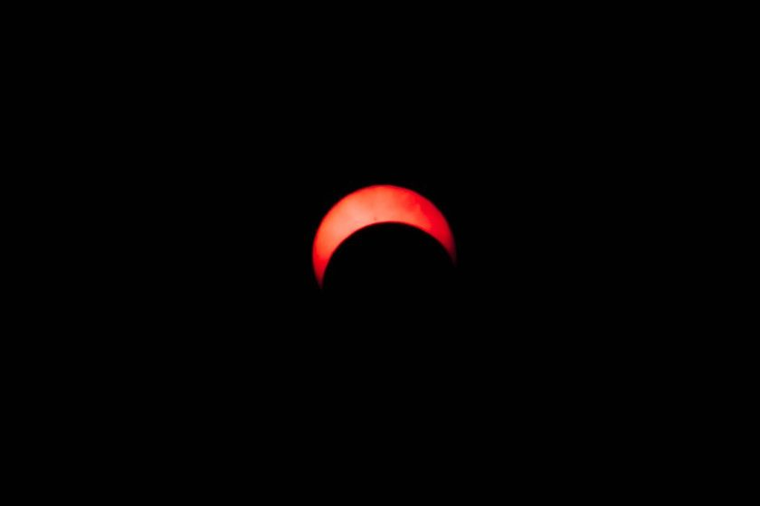

Small Habits That Actually Preserve Night Vision
Red flashlights get all the attention. The habits that make more of a difference are smaller, and easier to skip on a cold night.

Ask five people how to protect night vision in a backyard and four of them will say the same thing before anything else: get a red flashlight. It's not bad advice, exactly — I own two, use them constantly, and would never point a white headlamp at a star chart mid-session. But after a stretch of actually writing down what happened between stepping outside and finding a target, instead of assuming, the flashlight turned out to be a minor character in a story mostly written by three smaller habits that never make it onto a gear list: how bright a phone screen gets, how long I actually wait before hunting for anything faint, and whether I have the patience to let that waiting happen at all.
What a Red Flashlight Actually Buys You
Red light does one job well, and it's worth being specific about what that job is. The rod cells responsible for faint-light vision tend to be far less sensitive to long wavelengths than the cone cells that handle daytime color vision, so a dim red glow disturbs dark adaptation less than the same brightness of white light would. That's a real, useful property — it's why a red flashlight belongs in every eyepiece case, next to the star charts and the spare batteries. What it isn't is a shield. A red light held too close, left on too long, or turned up past "dim enough to read by" still costs some adaptation. It's a smaller cost than white light, not a free one, and treating it as immunity is where the myth starts doing more harm than good.
The Phone Screen Undoes More Than the Flashlight Ever Could
The habit that mattered most in my own log wasn't the flashlight at all — it was the phone. Checking a star-chart app, glancing at a weather radar update, replying to a text from whoever's inside waiting on the porch: every one of those pulls a screen up to full brightness by default, at arm's length, aimed more or less at your face. I timed it a few times out of curiosity with an ordinary stopwatch. A five-second unlocked glance at a bright screen cost somewhere around four minutes of visible recovery before faint objects looked the way they had before. A glance that turned into an actual reply cost closer to ten. A red flashlight, used with intention, does less damage across an entire evening than one unguarded phone check does in under a minute.
The flashlight protects the ten minutes you've already earned. It has never once given you those ten minutes back.
Adaptation Is a Curve, Not a Switch You Flip Outside the Door
The second habit, and the one I underestimated the longest, was timing. Stepping outside and immediately trying to find something faint treats dark adaptation like a light switch instead of the twenty-to-thirty-minute curve it actually tends to be — a lot of the improvement shows up in the first ten minutes, but the last, most useful stretch of sensitivity keeps building well past that. A good share of what gets chalked up to "my eyes just aren't good at this" turns out, once logged, to be "I gave it four minutes and went back inside for coffee." None of that gets solved by better red-light discipline. It gets solved by sequencing the whole evening around the wait instead of squeezing the wait in after everything else, the same planning covered in everything I check the afternoon before a clear night — because adaptation only pays off if the rest of the plan leaves room for it.
What a Two-Week Log Actually Showed
None of this was scientific in any formal sense — no control group, no instrument measuring pupil response, just a small notebook and a habit of writing down what I did before each faint target and how long the first useful look took. It was enough to notice a pattern, and the pattern kept pointing away from the flashlight and toward everything around it.
| Habit | Approx. adaptation cost | How often it happened | What I changed |
|---|---|---|---|
| Checking phone at full screen brightness | Roughly 4–10 min recovery | Several times a session | Dim the screen before stepping outside, not after |
| Going straight for a faint target on stepping out | Loses most of the early adaptation curve | Almost every rushed night | Start on brighter targets first, save faint ones for later |
| Red flashlight left "bright enough to read by" | Small but real, minutes not seconds | Rare once I noticed it | Dim it further than feels necessary |
| Porch light or car headlights mid-session | Close to a full reset | Out of my control | Face away, cup a hand, wait it out rather than fight it |
| Rushing the first target because of cold | Skips the wait almost entirely | More than I'd like to admit | Dress for the wait, not just for the session |
The Short List I Actually Keep Now
None of the changes that made a real difference cost anything or required new gear. They were mostly about moving small decisions earlier in the evening, before the cold and the impatience had a vote.
What actually changed, in order of how much it helped
- Dim the phone screen before stepping outside, not after the first faint target disappears
- Give the first fifteen minutes to brighter targets and save faint ones for later in the session
- Keep the red flashlight dim enough that it feels almost too dim to read comfortably by
- Treat a neighbor's porch light or a passing car the same way as an unguarded phone glance — face away and wait it out
- Dress warmer than the forecast suggests, since sky-quality numbers like the ones discussed in what a Bortle map doesn't tell you until you're standing in the yard never account for how long you'll actually stand still
The flashlight is still in the case, still red, still gets used every session. It just isn't doing the work I used to give it credit for. The list above is smaller, less photogenic, and mostly about not undoing, in one distracted minute, whatever patience already bought.
A note on dark adaptation
The general sensitivity difference between rod and cone cells across wavelengths is well documented in vision science, but individual adaptation speed varies by age, recent light exposure, and other factors a backyard notebook can't control for. What's described above is one person's informal comparison across a couple of weeks of sessions, not a controlled study, and it isn't intended as guidance about any vision condition — just a record of what changed the outcome of one set of observing nights.